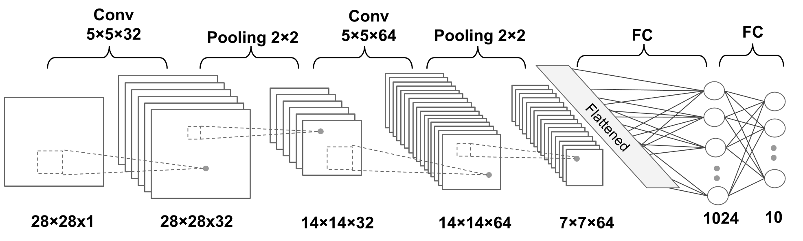

Classifying Images with Deep Convolutional Neural Networks
Contents
Classifying Images with Deep Convolutional Neural Networks¶
from IPython.display import Image
The building blocks of convolutional neural networks¶
Understanding CNNs and feature hierarchies¶
Image(filename='figures/14_01.png', width=700)

Performing discrete convolutions¶
Discrete convolutions in one dimension¶
Image(filename='figures/14_02.png', width=700)
Image(filename='figures/14_03.png', width=700)
Padding inputs to control the size of the output feature maps¶
Image(filename='figures/14_04.png', width=700)
Determining the size of the convolution output¶
import torch
import numpy as np
print(f'PyTorch version: {torch.__version__}')
print(f'NumPy version: {np.__version__}')
PyTorch version: 1.11.0
NumPy version: 1.21.6
def conv1d(x, w, p=0, s=1):
w_rot = np.array(w[::-1])
x_padded = np.array(x)
if p > 0:
zero_pad = np.zeros(shape=p)
x_padded = np.concatenate([zero_pad, x_padded, zero_pad])
res = []
for i in range(0, int((len(x_padded) - len(w_rot))) + 1, s):
res.append(np.sum(x_padded[i:i + w_rot.shape[0]] * w_rot))
return np.array(res)
## Testing:
x = [1, 3, 2, 4, 5, 6, 1, 3]
w = [1, 0, 3, 1, 2]
print(f'Conv1d Implementation: {conv1d(x, w, p=2, s=1)}')
print(f'Numpy Results: {np.convolve(x, w, mode="same")}')
Conv1d Implementation: [ 5. 14. 16. 26. 24. 34. 19. 22.]
Numpy Results: [ 5 14 16 26 24 34 19 22]
Performing a discrete convolution in 2D¶
Image(filename='figures/14_05.png', width=700)

Image(filename='figures/14_06.png', width=600)
Image(filename='figures/14_07.png', width=800)
import scipy.signal
def conv2d(X, W, p=(0, 0), s=(1, 1)):
W_rot = np.array(W)[::-1, ::-1]
X_orig = np.array(X)
n1 = X_orig.shape[0] + 2 * p[0]
n2 = X_orig.shape[1] + 2 * p[1]
X_padded = np.zeros(shape=(n1, n2))
X_padded[p[0]:p[0] + X_orig.shape[0], p[1]:p[1] + X_orig.shape[1]] = X_orig
res = []
for i in range(0,
int((X_padded.shape[0] - W_rot.shape[0]) / s[0]) + 1, s[0]):
res.append([])
for j in range(0,
int((X_padded.shape[1] - W_rot.shape[1]) / s[1]) + 1,
s[1]):
X_sub = X_padded[i:i + W_rot.shape[0], j:j + W_rot.shape[1]]
res[-1].append(np.sum(X_sub * W_rot))
return (np.array(res))
X = [[1, 3, 2, 4], [5, 6, 1, 3], [1, 2, 0, 2], [3, 4, 3, 2]]
W = [[1, 0, 3], [1, 2, 1], [0, 1, 1]]
print(f'Conv2d Implementation:\n {conv2d(X, W, p=(1, 1), s=(1, 1))}')
print(f'SciPy Results:\n {scipy.signal.convolve2d(X, W, mode="same")}')
Conv2d Implementation:
[[11. 25. 32. 13.]
[19. 25. 24. 13.]
[13. 28. 25. 17.]
[11. 17. 14. 9.]]
SciPy Results:
[[11 25 32 13]
[19 25 24 13]
[13 28 25 17]
[11 17 14 9]]
Subsampling layers¶
Image(filename='figures/14_08.png', width=700)

Putting everything together – implementing a CNN¶
Working with multiple input or color channels¶
Image(filename='figures/14_09.png', width=800)
TIP: Reading an image file
import torch
from torchvision.io import read_image
img = read_image('figures/example-image.png')
print(f'Image shape: {img.shape}')
print(f'Number of channels: {img.shape[0]}')
print(f'Image data type: {img.dtype}')
print(img[:, 100:102, 100:102])
Image shape: torch.Size([3, 252, 221])
Number of channels: 3
Image data type: torch.uint8
tensor([[[179, 182],
[180, 182]],
[[134, 136],
[135, 137]],
[[110, 112],
[111, 113]]], dtype=torch.uint8)
Regularizing a neural network with L2 regularization and dropout¶
Image(filename='figures/14_10.png', width=700)
import torch.nn as nn
loss_func = nn.BCELoss()
loss = loss_func(torch.tensor([0.9]), torch.tensor([1.0]))
l2_lambda = 0.001
conv_layer = nn.Conv2d(in_channels=3, out_channels=5, kernel_size=5)
l2_penalty = l2_lambda * sum([(p**2).sum() for p in conv_layer.parameters()])
loss_with_penalty = loss + l2_penalty
linear_layer = nn.Linear(10, 16)
l2_penalty = l2_lambda * sum([(p**2).sum() for p in linear_layer.parameters()])
loss_with_penalty = loss + l2_penalty
Loss Functions for Classification¶
nn.BCELoss()from_logits=Falsefrom_logits=True
nn.CrossEntropyLoss()from_logits=Falsefrom_logits=True
Image(filename='figures/14_11.png', width=800)

####### Binary Cross-entropy
logits = torch.tensor([0.8])
probas = torch.sigmoid(logits)
target = torch.tensor([1.0])
bce_loss_fn = nn.BCELoss()
bce_logits_loss_fn = nn.BCEWithLogitsLoss()
print(f'BCE (w Probas): {bce_loss_fn(probas, target):.4f}')
print(f'BCE (w Logits): {bce_logits_loss_fn(logits, target):.4f}')
####### Categorical Cross-entropy
logits = torch.tensor([[1.5, 0.8, 2.1]])
probas = torch.softmax(logits, dim=1)
target = torch.tensor([2])
cce_loss_fn = nn.NLLLoss()
cce_logits_loss_fn = nn.CrossEntropyLoss()
print(f'CCE (w Logits): {cce_logits_loss_fn(logits, target):.4f}')
print(f'CCE (w Probas): {cce_loss_fn(torch.log(probas), target):.4f}')
BCE (w Probas): 0.3711
BCE (w Logits): 0.3711
CCE (w Logits): 0.5996
CCE (w Probas): 0.5996
Implementing a deep convolutional neural network using PyTorch¶
The multilayer CNN architecture¶
Image(filename='figures/14_12.png', width=800)

Loading and preprocessing the data¶
import torchvision
from torchvision import transforms
image_path = '../../datasets/torch'
transform = transforms.Compose([transforms.ToTensor()])
mnist_dataset = torchvision.datasets.MNIST(root=image_path,
train=True,
transform=transform,
download=True)
from torch.utils.data import Subset
mnist_valid_dataset = Subset(mnist_dataset, torch.arange(10000))
mnist_train_dataset = Subset(mnist_dataset,
torch.arange(10000, len(mnist_dataset)))
mnist_test_dataset = torchvision.datasets.MNIST(root=image_path,
train=False,
transform=transform,
download=False)
from torch.utils.data import DataLoader
batch_size = 64
torch.manual_seed(1)
train_dl = DataLoader(mnist_train_dataset, batch_size, shuffle=True)
valid_dl = DataLoader(mnist_valid_dataset, batch_size, shuffle=False)
Implementing a CNN using the torch.nn module¶
Configuring CNN layers in PyTorch¶
Conv2d:
torch.nn.Conv2dout_channelskernel_sizestridepadding
MaxPool2d:
torch.nn.MaxPool2dkernel_sizestridepadding
Dropout
torch.nn.Dropoutp
Constructing a CNN in PyTorch¶
model = nn.Sequential()
model.add_module(
'conv1', nn.Conv2d(in_channels=1,
out_channels=32,
kernel_size=5,
padding=2))
model.add_module('relu1', nn.ReLU())
model.add_module('pool1', nn.MaxPool2d(kernel_size=2))
model.add_module(
'conv2',
nn.Conv2d(in_channels=32, out_channels=64, kernel_size=5, padding=2))
model.add_module('relu2', nn.ReLU())
model.add_module('pool2', nn.MaxPool2d(kernel_size=2))
x = torch.ones((4, 1, 28, 28))
model(x).shape
torch.Size([4, 64, 7, 7])
model.add_module('flatten', nn.Flatten())
x = torch.ones((4, 1, 28, 28))
model(x).shape
torch.Size([4, 3136])
model.add_module('fc1', nn.Linear(3136, 1024))
model.add_module('relu3', nn.ReLU())
model.add_module('dropout', nn.Dropout(p=0.5))
model.add_module('fc2', nn.Linear(1024, 10))
device = torch.device('cuda' if torch.cuda.is_available() else 'cpu')
model = model.to(device)
loss_fn = nn.CrossEntropyLoss()
optimizer = torch.optim.Adam(model.parameters(), lr=0.001)
def train(model, num_epochs, train_dl, valid_dl):
loss_hist_train = [0] * num_epochs
accuracy_hist_train = [0] * num_epochs
loss_hist_valid = [0] * num_epochs
accuracy_hist_valid = [0] * num_epochs
for epoch in range(num_epochs):
model.train()
for x_batch, y_batch in train_dl:
x_batch = x_batch.to(device)
y_batch = y_batch.to(device)
pred = model(x_batch)
loss = loss_fn(pred, y_batch)
loss.backward()
optimizer.step()
optimizer.zero_grad()
loss_hist_train[epoch] += loss.item() * y_batch.size(0)
is_correct = (torch.argmax(pred, dim=1) == y_batch).float()
accuracy_hist_train[epoch] += is_correct.sum().cpu()
loss_hist_train[epoch] /= len(train_dl.dataset)
accuracy_hist_train[epoch] /= len(train_dl.dataset)
model.eval()
with torch.no_grad():
for x_batch, y_batch in valid_dl:
x_batch = x_batch.to(device)
y_batch = y_batch.to(device)
pred = model(x_batch)
loss = loss_fn(pred, y_batch)
loss_hist_valid[epoch] += loss.item() * y_batch.size(0)
is_correct = (torch.argmax(pred, dim=1) == y_batch).float()
accuracy_hist_valid[epoch] += is_correct.sum().cpu()
loss_hist_valid[epoch] /= len(valid_dl.dataset)
accuracy_hist_valid[epoch] /= len(valid_dl.dataset)
print(
f'Epoch {epoch+1} accuracy: {accuracy_hist_train[epoch]:.4f} val_accuracy: {accuracy_hist_valid[epoch]:.4f}'
)
return loss_hist_train, loss_hist_valid, accuracy_hist_train, accuracy_hist_valid
torch.manual_seed(1)
num_epochs = 10
hist = train(model, num_epochs, train_dl, valid_dl)
Epoch 1 accuracy: 0.9484 val_accuracy: 0.9812
Epoch 2 accuracy: 0.9841 val_accuracy: 0.9870
Epoch 3 accuracy: 0.9885 val_accuracy: 0.9873
Epoch 4 accuracy: 0.9911 val_accuracy: 0.9842
Epoch 5 accuracy: 0.9934 val_accuracy: 0.9887
Epoch 6 accuracy: 0.9945 val_accuracy: 0.9896
Epoch 7 accuracy: 0.9949 val_accuracy: 0.9910
Epoch 8 accuracy: 0.9959 val_accuracy: 0.9892
Epoch 9 accuracy: 0.9963 val_accuracy: 0.9882
Epoch 10 accuracy: 0.9967 val_accuracy: 0.9890
Epoch 11 accuracy: 0.9966 val_accuracy: 0.9916
Epoch 12 accuracy: 0.9981 val_accuracy: 0.9908
Epoch 13 accuracy: 0.9978 val_accuracy: 0.9910
Epoch 14 accuracy: 0.9970 val_accuracy: 0.9908
Epoch 15 accuracy: 0.9977 val_accuracy: 0.9915
Epoch 16 accuracy: 0.9985 val_accuracy: 0.9902
Epoch 17 accuracy: 0.9985 val_accuracy: 0.9915
Epoch 18 accuracy: 0.9978 val_accuracy: 0.9912
Epoch 19 accuracy: 0.9984 val_accuracy: 0.9896
Epoch 20 accuracy: 0.9977 val_accuracy: 0.9925
import matplotlib.pyplot as plt
x_arr = np.arange(len(hist[0])) + 1
_, axes = plt.subplots(1, 2, figsize=(10, 4), constrained_layout=True)
axes[0].plot(x_arr, hist[0], '-o', label='Train loss')
axes[0].plot(x_arr, hist[1], '--<', label='Validation loss')
axes[0].set_xlabel('Epoch', size='medium')
axes[0].set_ylabel('Loss', size='medium')
axes[0].legend(fontsize=15)
axes[1].plot(x_arr, hist[2], '-o', label='Train acc.')
axes[1].plot(x_arr, hist[3], '--<', label='Validation acc.')
axes[1].set_xlabel('Epoch', size='medium')
axes[1].set_ylabel('Accuracy', size='medium')
axes[1].legend(fontsize=15)
#plt.savefig('figures/14_13.png')
plt.show()
# torch.cuda.synchronize()
model_cpu = model.cpu()
pred = model(mnist_test_dataset.data.unsqueeze(1) / 255.)
is_correct = (torch.argmax(pred, dim=1) == mnist_test_dataset.targets).float()
print(f'Test accuracy: {is_correct.mean():.4f}')
Test accuracy: 0.9926
_, axes = plt.subplots(2, 6, figsize=(12, 8), constrained_layout=True)
for ind, ax in enumerate(axes.flatten()):
ax.set(xticks=[], yticks=[])
img = mnist_test_dataset[ind][0][0, :, :]
pred = model(img.unsqueeze(0).unsqueeze(1))
y_pred = torch.argmax(pred)
ax.imshow(img, cmap='gray_r')
ax.text(0.9,
0.1,
y_pred.item(),
size=15,
color='blue',
horizontalalignment='center',
verticalalignment='center',
transform=ax.transAxes)
#plt.savefig('figures/14_14.png')
plt.show()
path = '../../datasets/torch/mnist-cnn.ph'
torch.save(model, path)
Smile classification from face images using CNN¶
Loading the CelebA dataset¶
import torchvision
image_path = '../../datasets/torch'
celeba_train_dataset = torchvision.datasets.CelebA(image_path,
split='train',
target_type='attr',
download=False)
celeba_valid_dataset = torchvision.datasets.CelebA(image_path,
split='valid',
target_type='attr',
download=False)
celeba_test_dataset = torchvision.datasets.CelebA(image_path,
split='test',
target_type='attr',
download=False)
print(f'Train set: {len(celeba_train_dataset)}')
print(f'Validation set: {len(celeba_valid_dataset)}')
print(f'Test set: {len(celeba_test_dataset)}')
Train set: 162770
Validation set: 19867
Test set: 19962
Image transformation and data augmentation¶
from torchvision import transforms
## take 5 examples
fig = plt.figure(figsize=(16, 8.5))
## Column 1: cropping to a bounding-box
ax = fig.add_subplot(2, 5, 1)
img, attr = celeba_train_dataset[0]
ax.set_title('Crop to a \nbounding-box', size='medium')
ax.imshow(img)
ax = fig.add_subplot(2, 5, 6)
img_cropped = transforms.functional.crop(img, 50, 20, 128, 128)
ax.imshow(img_cropped)
## Column 2: flipping (horizontally)
ax = fig.add_subplot(2, 5, 2)
img, attr = celeba_train_dataset[1]
ax.set_title('Flip (horizontal)', size='medium')
ax.imshow(img)
ax = fig.add_subplot(2, 5, 7)
img_flipped = transforms.functional.hflip(img)
ax.imshow(img_flipped)
## Column 3: adjust contrast
ax = fig.add_subplot(2, 5, 3)
img, attr = celeba_train_dataset[2]
ax.set_title('Adjust constrast', size='medium')
ax.imshow(img)
ax = fig.add_subplot(2, 5, 8)
img_adj_contrast = transforms.functional.adjust_contrast(img,
contrast_factor=2)
ax.imshow(img_adj_contrast)
## Column 4: adjust brightness
ax = fig.add_subplot(2, 5, 4)
img, attr = celeba_train_dataset[3]
ax.set_title('Adjust brightness', size='medium')
ax.imshow(img)
ax = fig.add_subplot(2, 5, 9)
img_adj_brightness = transforms.functional.adjust_brightness(
img, brightness_factor=1.3)
ax.imshow(img_adj_brightness)
## Column 5: cropping from image center
ax = fig.add_subplot(2, 5, 5)
img, attr = celeba_train_dataset[4]
ax.set_title('Center crop\nand resize', size='medium')
ax.imshow(img)
ax = fig.add_subplot(2, 5, 10)
img_center_crop = transforms.functional.center_crop(img,
[0.7 * 218, 0.7 * 178])
img_resized = transforms.functional.resize(img_center_crop, size=(218, 178))
ax.imshow(img_resized)
# plt.savefig('figures/14_14.png', dpi=300)
plt.show()
torch.manual_seed(1)
fig = plt.figure(figsize=(14, 12))
for i, (img, attr) in enumerate(celeba_train_dataset):
ax = fig.add_subplot(3, 4, i * 4 + 1)
ax.imshow(img)
if i == 0:
ax.set_title('Orig.', size='medium')
ax = fig.add_subplot(3, 4, i * 4 + 2)
img_transform = transforms.Compose([transforms.RandomCrop([178, 178])])
img_cropped = img_transform(img)
ax.imshow(img_cropped)
if i == 0:
ax.set_title('Step 1: Random crop', size='medium')
ax = fig.add_subplot(3, 4, i * 4 + 3)
img_transform = transforms.Compose([transforms.RandomHorizontalFlip()])
img_flip = img_transform(img_cropped)
ax.imshow(img_flip)
if i == 0:
ax.set_title('Step 2: Random flip', size='medium')
ax = fig.add_subplot(3, 4, i * 4 + 4)
img_resized = transforms.functional.resize(img_flip, size=(128, 128))
ax.imshow(img_resized)
if i == 0:
ax.set_title('Step 3: Resize', size='medium')
if i == 2:
break
# plt.savefig('figures/14_15.png', dpi=300)
plt.show()
get_smile = lambda attr: attr[18]
transform_train = transforms.Compose([
transforms.RandomCrop([178, 178]),
transforms.RandomHorizontalFlip(),
transforms.Resize([64, 64]),
transforms.ToTensor(),
])
transform = transforms.Compose([
transforms.CenterCrop([178, 178]),
transforms.Resize([64, 64]),
transforms.ToTensor(),
])
from torch.utils.data import DataLoader
celeba_train_dataset = torchvision.datasets.CelebA(image_path,
split='train',
target_type='attr',
download=False,
transform=transform_train,
target_transform=get_smile)
torch.manual_seed(1)
data_loader = DataLoader(celeba_train_dataset, batch_size=2)
fig = plt.figure(figsize=(15, 6))
num_epochs = 5
for j in range(num_epochs):
img_batch, label_batch = next(iter(data_loader))
img = img_batch[0]
ax = fig.add_subplot(2, 5, j + 1)
ax.set(xticks=[], yticks=[])
ax.set_title(f'Epoch {j}:', size='medium')
ax.imshow(img.permute(1, 2, 0))
img = img_batch[1]
ax = fig.add_subplot(2, 5, j + 6)
ax.set(xticks=[], yticks=[])
ax.imshow(img.permute(1, 2, 0))
#plt.savefig('figures/14_16.png', dpi=300)
plt.show()
celeba_valid_dataset = torchvision.datasets.CelebA(image_path,
split='valid',
target_type='attr',
download=False,
transform=transform,
target_transform=get_smile)
celeba_test_dataset = torchvision.datasets.CelebA(image_path,
split='test',
target_type='attr',
download=False,
transform=transform,
target_transform=get_smile)
from torch.utils.data import Subset
celeba_train_dataset = Subset(celeba_train_dataset, torch.arange(16000))
celeba_valid_dataset = Subset(celeba_valid_dataset, torch.arange(1000))
print(f'Train set: {len(celeba_train_dataset)}')
print(f'Validation set: {len(celeba_valid_dataset)}')
Train set: 16000
Validation set: 1000
batch_size = 32
torch.manual_seed(1)
train_dl = DataLoader(celeba_train_dataset, batch_size, shuffle=True)
valid_dl = DataLoader(celeba_valid_dataset, batch_size, shuffle=False)
test_dl = DataLoader(celeba_test_dataset, batch_size, shuffle=False)
Training a CNN Smile classifier¶
Global Average Pooling
Image(filename='figures/14_13.png', width=800)
import torch.nn as nn
model = nn.Sequential()
model.add_module(
'conv1', nn.Conv2d(in_channels=3,
out_channels=32,
kernel_size=3,
padding=1))
model.add_module('relu1', nn.ReLU())
model.add_module('pool1', nn.MaxPool2d(kernel_size=2))
model.add_module('dropout1', nn.Dropout(p=0.5))
model.add_module(
'conv2',
nn.Conv2d(in_channels=32, out_channels=64, kernel_size=3, padding=1))
model.add_module('relu2', nn.ReLU())
model.add_module('pool2', nn.MaxPool2d(kernel_size=2))
model.add_module('dropout2', nn.Dropout(p=0.5))
model.add_module(
'conv3',
nn.Conv2d(in_channels=64, out_channels=128, kernel_size=3, padding=1))
model.add_module('relu3', nn.ReLU())
model.add_module('pool3', nn.MaxPool2d(kernel_size=2))
model.add_module(
'conv4',
nn.Conv2d(in_channels=128, out_channels=256, kernel_size=3, padding=1))
model.add_module('relu4', nn.ReLU())
x = torch.ones((4, 3, 64, 64))
model(x).shape
torch.Size([4, 256, 8, 8])
model.add_module('pool4', nn.AvgPool2d(kernel_size=8))
model.add_module('flatten', nn.Flatten())
x = torch.ones((4, 3, 64, 64))
model(x).shape
torch.Size([4, 256])
model.add_module('fc', nn.Linear(256, 1))
model.add_module('sigmoid', nn.Sigmoid())
x = torch.ones((4, 3, 64, 64))
model(x).shape
torch.Size([4, 1])
model
Sequential(
(conv1): Conv2d(3, 32, kernel_size=(3, 3), stride=(1, 1), padding=(1, 1))
(relu1): ReLU()
(pool1): MaxPool2d(kernel_size=2, stride=2, padding=0, dilation=1, ceil_mode=False)
(dropout1): Dropout(p=0.5, inplace=False)
(conv2): Conv2d(32, 64, kernel_size=(3, 3), stride=(1, 1), padding=(1, 1))
(relu2): ReLU()
(pool2): MaxPool2d(kernel_size=2, stride=2, padding=0, dilation=1, ceil_mode=False)
(dropout2): Dropout(p=0.5, inplace=False)
(conv3): Conv2d(64, 128, kernel_size=(3, 3), stride=(1, 1), padding=(1, 1))
(relu3): ReLU()
(pool3): MaxPool2d(kernel_size=2, stride=2, padding=0, dilation=1, ceil_mode=False)
(conv4): Conv2d(128, 256, kernel_size=(3, 3), stride=(1, 1), padding=(1, 1))
(relu4): ReLU()
(pool4): AvgPool2d(kernel_size=8, stride=8, padding=0)
(flatten): Flatten(start_dim=1, end_dim=-1)
(fc): Linear(in_features=256, out_features=1, bias=True)
(sigmoid): Sigmoid()
)
device = torch.device('cuda' if torch.cuda.is_available() else 'cpu')
model = model.to(device)
loss_fn = nn.BCELoss()
optimizer = torch.optim.Adam(model.parameters(), lr=0.001)
def train(model, num_epochs, train_dl, valid_dl):
loss_hist_train = [0] * num_epochs
accuracy_hist_train = [0] * num_epochs
loss_hist_valid = [0] * num_epochs
accuracy_hist_valid = [0] * num_epochs
for epoch in range(num_epochs):
model.train()
for x_batch, y_batch in train_dl:
x_batch = x_batch.to(device)
y_batch = y_batch.to(device)
pred = model(x_batch)[:, 0]
loss = loss_fn(pred, y_batch.float())
loss.backward()
optimizer.step()
optimizer.zero_grad()
loss_hist_train[epoch] += loss.item() * y_batch.size(0)
is_correct = ((pred >= 0.5).float() == y_batch).float()
accuracy_hist_train[epoch] += is_correct.sum().cpu()
loss_hist_train[epoch] /= len(train_dl.dataset)
accuracy_hist_train[epoch] /= len(train_dl.dataset)
model.eval()
with torch.no_grad():
for x_batch, y_batch in valid_dl:
x_batch = x_batch.to(device)
y_batch = y_batch.to(device)
pred = model(x_batch)[:, 0]
loss = loss_fn(pred, y_batch.float())
loss_hist_valid[epoch] += loss.item() * y_batch.size(0)
is_correct = ((pred >= 0.5).float() == y_batch).float()
accuracy_hist_valid[epoch] += is_correct.sum().cpu()
loss_hist_valid[epoch] /= len(valid_dl.dataset)
accuracy_hist_valid[epoch] /= len(valid_dl.dataset)
print(
f'Epoch {epoch+1} accuracy: {accuracy_hist_train[epoch]:.4f} val_accuracy: {accuracy_hist_valid[epoch]:.4f}'
)
return loss_hist_train, loss_hist_valid, accuracy_hist_train, accuracy_hist_valid
torch.manual_seed(1)
num_epochs = 10
hist = train(model, num_epochs, train_dl, valid_dl)
Epoch 1 accuracy: 0.6198 val_accuracy: 0.7120
Epoch 2 accuracy: 0.6973 val_accuracy: 0.6780
Epoch 3 accuracy: 0.7188 val_accuracy: 0.7410
Epoch 4 accuracy: 0.7377 val_accuracy: 0.7840
Epoch 5 accuracy: 0.7458 val_accuracy: 0.7920
Epoch 6 accuracy: 0.7602 val_accuracy: 0.7980
Epoch 7 accuracy: 0.7864 val_accuracy: 0.8130
Epoch 8 accuracy: 0.8075 val_accuracy: 0.8460
Epoch 9 accuracy: 0.8178 val_accuracy: 0.8500
Epoch 10 accuracy: 0.8322 val_accuracy: 0.8430
x_arr = np.arange(len(hist[0])) + 1
_, axes = plt.subplots(1, 2, figsize=(10, 4), constrained_layout=True)
axes[0].plot(x_arr, hist[0], '-o', label='Train loss')
axes[0].plot(x_arr, hist[1], '--<', label='Validation loss')
axes[0].legend(fontsize=15)
axes[0].set_xlabel('Epoch', size='medium')
axes[0].set_ylabel('Loss', size='medium')
axes[1].plot(x_arr, hist[2], '-o', label='Train acc.')
axes[1].plot(x_arr, hist[3], '--<', label='Validation acc.')
axes[1].legend(fontsize=15)
axes[1].set_xlabel('Epoch', size='medium')
axes[1].set_ylabel('Accuracy', size='medium')
#plt.savefig('figures/14_17.png', dpi=300)
plt.show()
accuracy_test = 0
model.eval()
with torch.no_grad():
for x_batch, y_batch in test_dl:
x_batch = x_batch.to(device)
y_batch = y_batch.to(device)
pred = model(x_batch)[:, 0]
is_correct = ((pred >= 0.5).float() == y_batch).float()
accuracy_test += is_correct.sum().cpu()
accuracy_test /= len(test_dl.dataset)
print(f'Test accuracy: {accuracy_test:.4f}')
Test accuracy: 0.8314
pred = model(x_batch)[:, 0] * 100
fig = plt.figure(figsize=(15, 7))
for j in range(10, 20):
ax = fig.add_subplot(2, 5, j - 10 + 1)
ax.set(xticks=[], yticks=[])
ax.imshow(x_batch[j].cpu().permute(1, 2, 0))
if y_batch[j] == 1:
label = 'Smile'
else:
label = 'Not Smile'
ax.text(0.5,
-0.15,
f'GT: {label:s}\nPr(Smile)={pred[j]:.0f}%',
size=16,
horizontalalignment='center',
verticalalignment='center',
transform=ax.transAxes)
#plt.savefig('figures/figures-14_18.png', dpi=300)
plt.show()
path = '../../datasets/torch/celeba-cnn.ph'
torch.save(model, path)